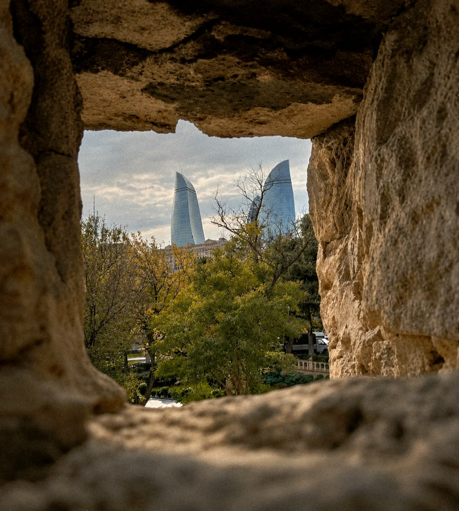
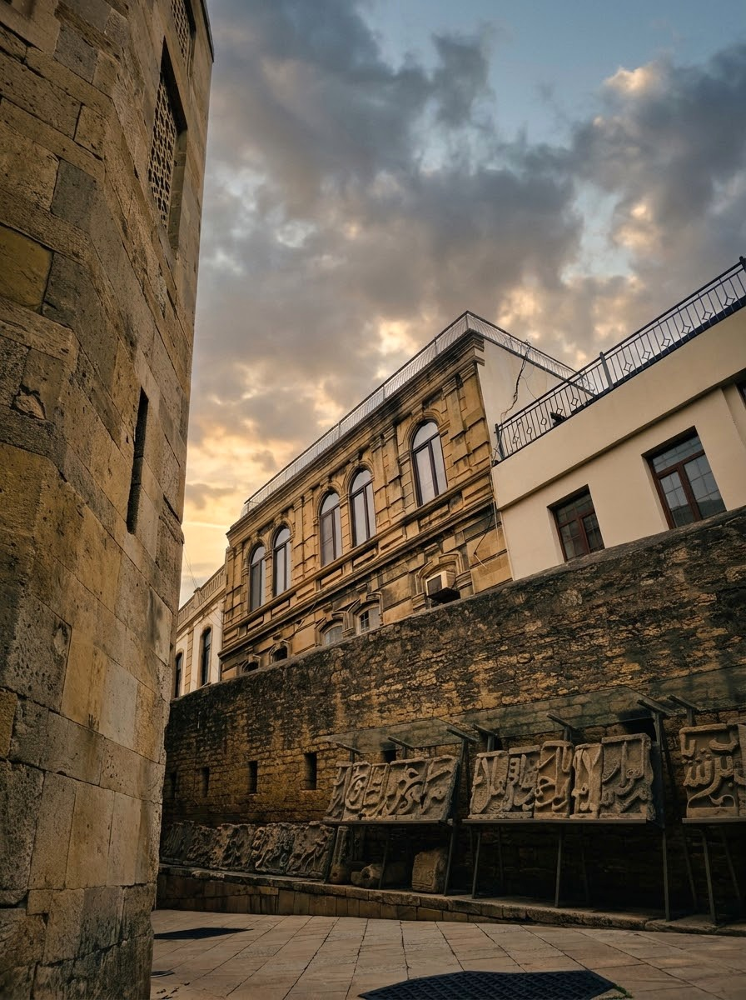
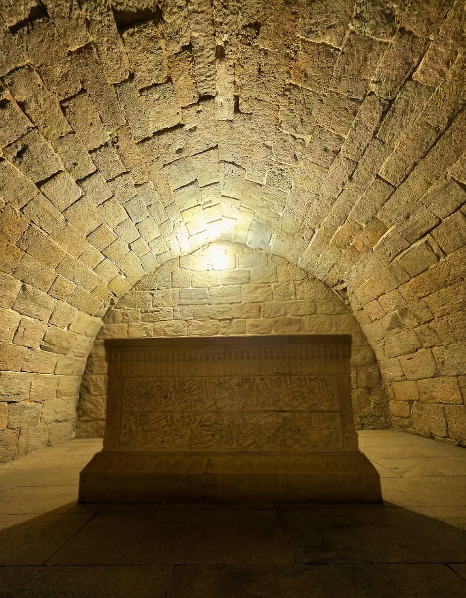
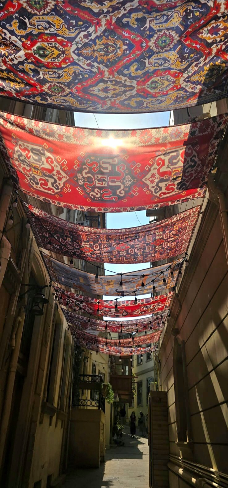
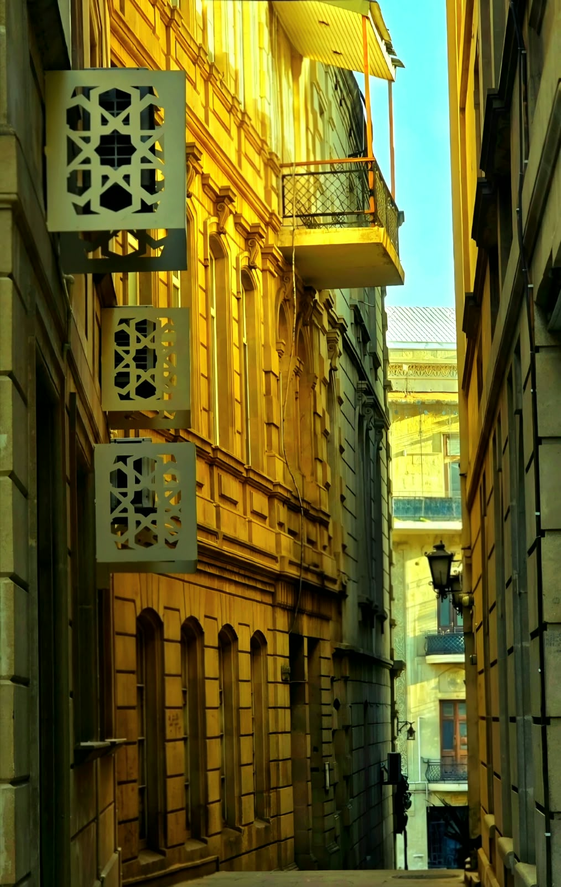
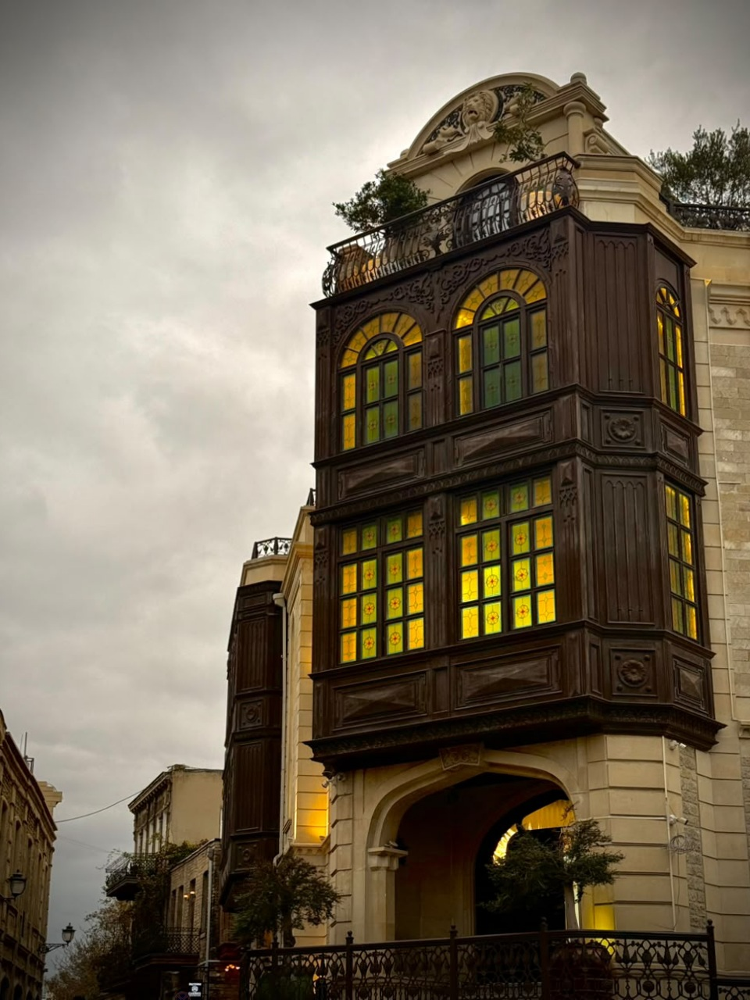
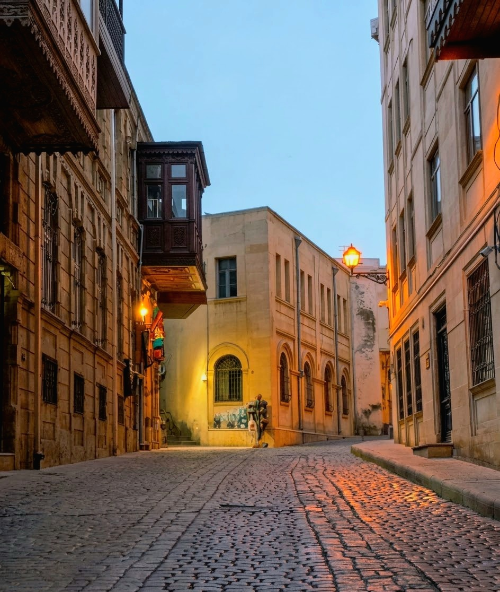
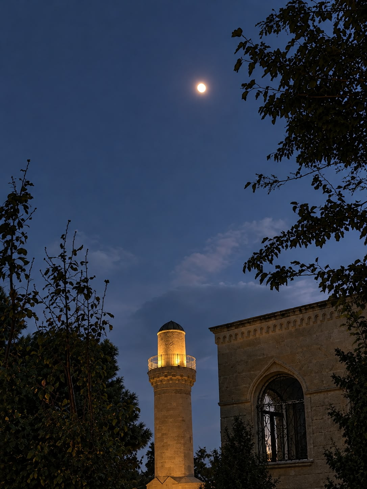

Tarixin Görünən İzi
Əsrlərin sükutunu qoruyan qədim daş divarların arasından müasir Bakının nəbzi görünür. İçərişəhər – keçmişin bu günə açılan pəncərəsidir.
Keçmişin vizual izi:
İçərişəhər gənclərin gözü ilə

Əsrlərin sükutunu qoruyan qədim daş divarların arasından müasir Bakının nəbzi görünür. İçərişəhər – keçmişin bu günə açılan pəncərəsidir.

Hər daş bir salnamə, hər naxış bir dövrün şahididir. Açıq səma altında qorunan bu daş kitabələr Xəzərin sahilindəki qədim tariximizin daşlaşmış səsidir.

Daş tağların kölgəsində süzülən bir işıq şüası əsrlər əvvəlki mənəvi dünyanı aydınladır. Burada zaman dayanır, yerini dərin bir ehtiram və sükuta verir.

Dar küçələrin səmasını bəzəyən xalçalar təkcə bəzək deyil, nəsildən-nəslə ötürülən mədəni kodumuzdur. Günəş şüaları ilmələrə toxunduqca tarix yenidən canlanır.

Şərq memarlığının zərif həndəsəsi və gün işığının yaratdığı isti tonlar. İçərişəhərin dar keçidlərində hər addım yeni bir estetik kəşfdir.

Usta əllərin zəhməti ilə yoğrulmuş taxta şəbəkələr və içəridən süzülən isti işıq. Bu eyvanlar Bakının qədim məhəllə mədəniyyətinin və zövqünün simvoludur.

Gün batarkən küçə fənərlərinin narıncı işığı qədim daş döşəmələrdə rəqs edir. Axşamın sərinliyində bu küçələr özünün ən romantik və sirli simasını göstərir.

Gecənin dərinliyində Ay işığı ilə birləşən minarə ucalığı. İçərişəhər təkcə daş və divarlardan ibarət deyil — o, səmaya uzanan əbədi bir ruhdur.
“Keçmişin vizual izi: İçərişəhər gənclərin gözü ilə”